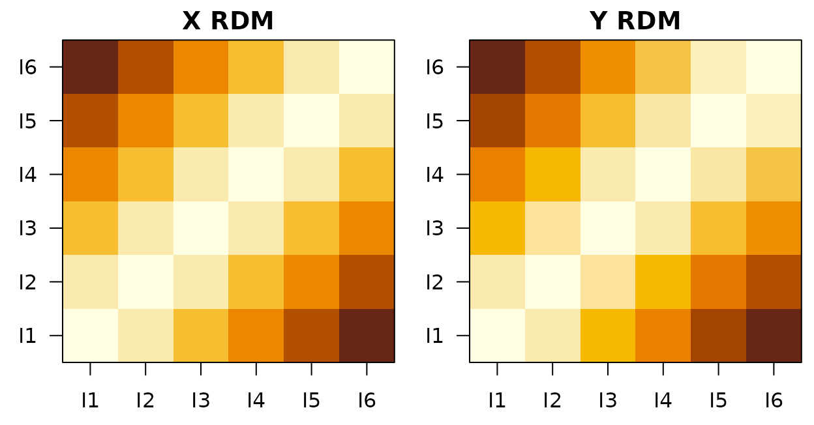

Representational Mediation (ReNA-RM): repmed_model
Source:vignettes/repmed_model.Rmd
repmed_model.RmdReNA-RM is one of four cross-domain representational models in rMVPA. For the section’s terminology and how to choose between ReNA-RC, ReNA-Map, ReNA-RM, and REMAP-RRR, see the glossary at the top of
vignette("Naive_Cross_Decoding").
Overview
ReNA-RM tests whether an ROI’s representational geometry (mediator M) mediates the relationship between a predictor RDM (X) and an outcome RDM (Y). It reports standard mediation paths (a, b, c′), the total effect (c), the indirect effect (a·b), and a simple Sobel z/p.
- Inputs: item key, X and Y RDMs (K×K), optional confound RDMs
- Output (per ROI): med_a, med_b, med_cprime, med_c, med_indirect, med_sobel_z/p
Scientific motivation
Key question: Does a brain region actively transform or relay information between two representational spaces?
Standard mediation analysis asks whether M mediates X→Y. Representational mediation extends this to similarity structures: - X: predictor RDM (e.g., semantic similarity from word embeddings) - M: ROI’s neural RDM (computed from voxel patterns) - Y: outcome RDM (e.g., behavioral similarity judgments)
Example scientific questions: - Does hippocampus mediate the relationship between semantic similarity and episodic memory confusion? (Do similar concepts get confused because hippocampus encodes them similarly?) - Does inferotemporal cortex transform low-level visual similarity (V1) into categorical similarity (perirhinal cortex)? - Which brain regions along the ventral stream actively reshape visual representations vs. passively relay them?
Interpretation of paths: - Path a (X→M): Does the predictor structure correlate with neural geometry? (e.g., do semantically similar words activate similar patterns?) - Path b (M→Y|X): Does neural geometry predict outcome similarity controlling for the predictor? (unique neural contribution) - Path c’ (X→Y|M): Direct effect of predictor on outcome after removing mediation - Indirect effect (a×b): How much of X→Y is carried through neural geometry?
Comparison to alternatives: - vs. RSA alone: RSA tests correlation; mediation tests mechanistic pathways - vs. Trial-level mediation: ReNA-RM operates on representational geometries (2nd-order), revealing how similarity structures transform across regions
Data requirements
- Trial-level design with item key to average trials into mediator prototypes.
- X/Y RDMs labeled by items; optional labeled confound RDMs.
What do the X and Y RDMs look like?
ReNA-RM tests whether a region’s geometry mediates the predictor RDM
X’s relationship to the outcome RDM Y. The toy
below builds an ordinal X RDM and a noisy linear transformation of it as
Y, so the two are related but not identical.
set.seed(31)
K <- 6
items <- paste0("I", seq_len(K))
xi <- matrix(seq_len(K), K, 1)
yi <- xi + rnorm(K, sd = 0.1)
Xr <- as.matrix(stats::dist(xi)); rownames(Xr) <- colnames(Xr) <- items
Yr <- as.matrix(stats::dist(yi)); rownames(Yr) <- colnames(Yr) <- items
Left: predictor RDM X (clean ordinal). Right: outcome RDM Y (noisy version of X). ReNA-RM asks how much of the X -> Y relationship passes through an ROI’s representational geometry.
Quick start: single ROI
library(rMVPA)
## Synthetic dataset
ds <- gen_sample_dataset(D = c(6,6,6), nobs = 60, response_type = "categorical",
data_mode = "image", blocks = 3, nlevels = 6)
K <- 6
items <- paste0("I", 1:K)
ds$design$train_design$ImageID <- factor(rep(items, length.out = nrow(ds$design$train_design)), levels = items)
## Build X and Y RDMs (labeled by items)
xi <- matrix(1:K, K, 1)
yi <- xi + rnorm(K, 0, 0.1) # noisy transform
Xr <- as.matrix(dist(xi)); rownames(Xr) <- colnames(Xr) <- items
Yr <- as.matrix(dist(yi)); rownames(Yr) <- colnames(Yr) <- items
rmdes <- repmed_design(items = items, X_rdm = Xr, Y_rdm = Yr)
rmmod <- repmed_model(dataset = ds$dataset, design = ds$design, repmed_des = rmdes,
key_var = ~ ImageID, distfun = cordist(method = "pearson"))
vox <- which(ds$dataset$mask > 0)[1:50]
roi <- list(train_roi = neuroim2::series_roi(ds$dataset$train_data, vox), test_roi = NULL)
out <- process_roi(rmmod, roi, rnum = 1)
out$performance[[1]]Regional analysis
## Toy two-ROI mask (demo only)
region_vec <- as.vector(ds$dataset$mask)
inds <- which(region_vec > 0)
half <- length(inds) %/% 2
region_vec[inds[1:half]] <- 1L
region_vec[inds[(half+1):length(inds)]] <- 2L
region_vec[region_vec <= 0] <- 0L
region_mask <- neuroim2::NeuroVol(array(region_vec, dim = dim(ds$dataset$mask)), neuroim2::space(ds$dataset$mask))
# res <- run_regional(rmmod, region_mask) # disabled for vignette speed
# head(res$performance_table)Interpreting outputs
- med_a: association of X→M (vectorized RDMs).
- med_b: association of M→Y controlling for X.
- med_cprime: direct effect of X→Y controlling for M.
- med_c: total effect of X→Y.
- med_indirect: a·b.
- med_sobel_z/p: naive Sobel approximation (see caveats).
Notes and pitfalls
- Dependence: entries of vectorized RDMs are not independent; Sobel p-values are approximate. For inference, prefer permutation/bootstrapping.
- Label alignment: X/Y/confound RDMs must be labeled by items; items are intersected and sorted across sources.
- Small K: results are flagged when K < 5.
See also
-
vignette("repmap_model")– Representational Mapping (ReNA-Map) -
vignette("repnet_model")– Representational Connectivity (ReNA-RC) -
vignette("Naive_Cross_Decoding")– Naive cross-decoding baseline